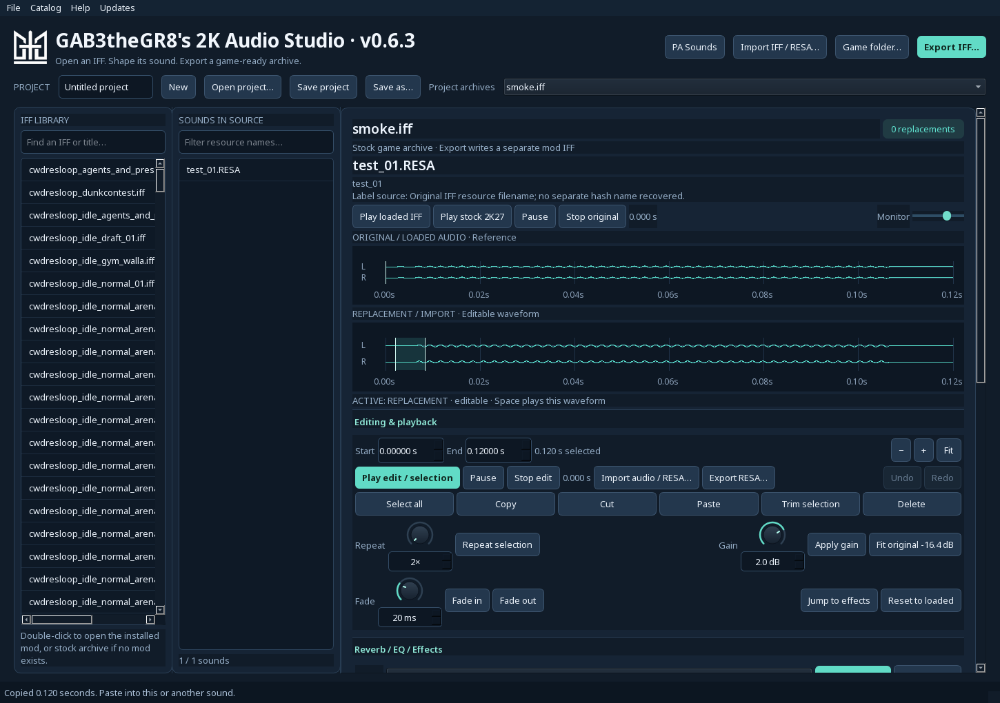
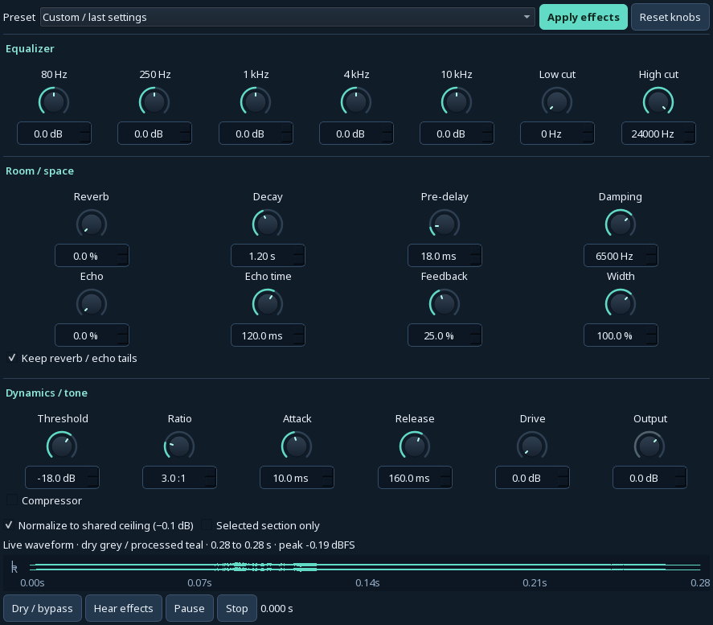
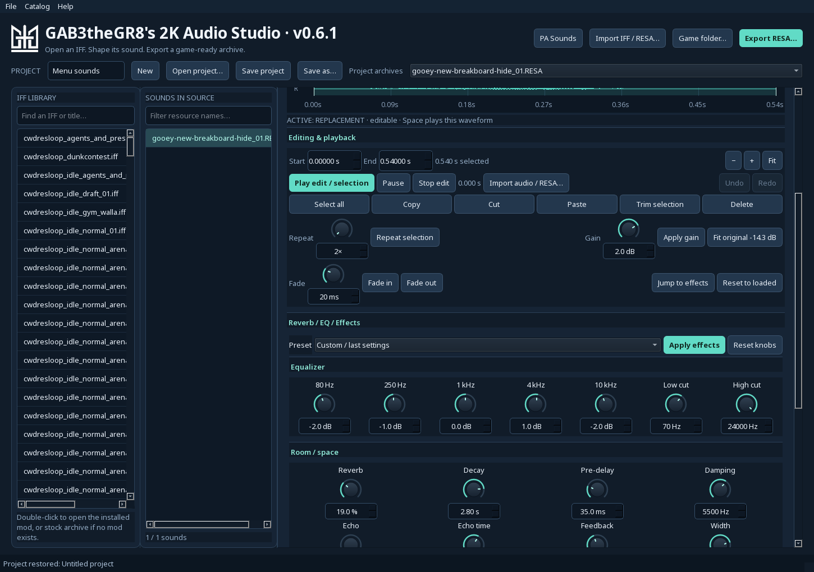

GAB3theGR8’s
2K Audio Studio
Hear the original. Shape the replacement.
Export an IFF or an individual RESA.
Open a 2K audio archive, import your own recording, and edit its waveform with trim, repeat, copy and paste. Keep multiple replacements together, then export the selected archive with its original filename.
License key from Gabe required. Activation approves one Windows user on one computer. Connect for first activation; an approved installation can work offline for up to seven days. Audio stays on your PC.

See both waveforms
See the original loaded waveform above your imported replacement. Fit replacement peaks to the measured loaded original. Edit below while keeping the original visible. Click either waveform to activate its cursor and selection. Space plays or pauses the active waveform; clicking another position during playback seeks. Each waveform also has independent transport controls.
PA Sounds by team
Browse 5,676 PA music clips by team, see recovered cue names and hashes, and export only edited native .wav files with their exact filenames.
Export an IFF
Save the complete archive, such as sfx_inside_001.iff, with your replacements and every untouched resource checked. Export RESA saves any selected sound from an IFF, PA library or standalone import. It includes current unapplied waveform edits, with the original filename suggested.
Shape the room and speaker sound
Scroll the right-hand editor to the EQ, room / space and dynamics sections beneath the waveforms for five-band EQ, room reverb, slap echo, stereo width, compression and speaker saturation. Drag teal knobs vertically and watch the live dry/processed waveform overlay update. Type exact values below each knob. Previewing leaves your audio unchanged until Apply. Start with indoor, outdoor, gym, arena, PA or distant-crowd presets. Compare dry and processed previews, then apply an undoable edit. Match original peaks is enabled by default.

One continuous editor
Editing, EQ, reverb and dynamics are assembled beneath the waveforms. Scroll the right-hand panel to reach every section, with no effects tabs or separate effects window. Import standalone .RESA files or full IFF archives. Indexed menu sounds, including newbreakboard, retain rebuilt seek tables when edited. Older converter-made RESA sounds now receive a fresh native header on export, fixing the unsupported channel layout or codec error.

Updates built into Studio
Studio checks for signed updates after launch and daily while open. Choose Update and restart when a new version is available. Save your project before restarting; activation and settings stay in place. You can also use Help → Check for updates, or disable background checks in the Updates menu. Users of earlier builds need to install this release once to move to the new public download host. Activation and saved projects carry over; future updates will use this location.
The PA catalog now has 533 additional team links: 2,721 recordings have candidate team associations, including 449 previously unassigned recordings. The complete library remains 5,676 native clips.
From sound to game archive
- Run the Windows installer once, then open GAB3theGR8’s 2K Audio Studio from your Start menu.
- Choose Import IFF / RESA to open a standalone RESA sound or find audio inside a local archive, or set your game folder and double-click an archive in the library.
- Select a sound and audition the loaded or stock version. For PA music, click PA Sounds and select a team.
- Import a replacement, select a waveform section, and make your edits.
- To export just the selected sound from any source, choose Export RESA beside the audio import button (or press Ctrl+Shift+E).
- For IFFs, choose Apply to IFF, then Export IFF. For PA music, choose Apply PA sound and Export PA team to export only edited sounds into a team-named folder containing
newaudio/eventmusic/*.wav.
Use the visible New, Open project, Save project and Save as buttons to keep EuroLeague, NBA and other projects separate. Each .2kaudio project can hold multiple IFFs, pending replacements, the current unapplied waveform, selections, effect knobs and labels. Switch IFFs through Project archives. Older single-IFF projects remain readable. Existing catalog-label JSON files can be imported through the Catalog menu.